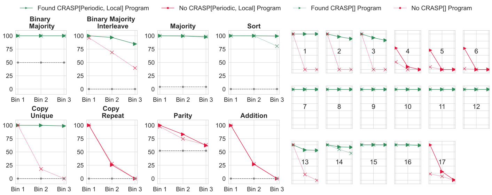

Three questions about length generalization
A transformer trained to recognize balanced parentheses on short strings may be evaluated on longer strings. Understanding this setting requires separating what the model can represent, what training identifies, and where the resulting computation remains correct.
One possibility is that it has discovered a computation whose instructions do not depend on input length. C-RASP makes such computations explicit: a fixed sequence of operations acts on a vector with one entry per input token. Longer inputs produce longer vectors, not longer programs.
Representability
Does a transformer exist that computes the target?
Learning
Does training find a solution on the observed inputs?
Length generalization
Does that solution also work beyond the training lengths?
These are different questions. A construction answers the first; it does not, on its own, answer the other two. The following sections discuss these questions separately.
A C-RASP program for balanced parentheses
In Dyck-1, every opening parenthesis must eventually close, and no prefix may contain more closes than opens. Checking only the totals would incorrectly accept ())(.
The program below counts opens and closes, marks invalid prefixes, and accepts only when no violation has occurred and the final counts agree. The symbol # counts inclusively through the current token.
Using the example. The initial table is a saved execution of the displayed program on ()(()). Each assignment produces one value per token. Select an assignment name or use the arrows to highlight a row; select a count cell to inspect its prefix. Edit the tokens or program and choose Run Python interpreter to update the table. For comparison, ())( has equal final counts but is rejected because an earlier prefix contains too many closes. The other examples are available in the menu.
Start with the balanced input, then compare it with an input that has the same totals but an invalid prefix.
Reading the trace
Each row in the trace is a vector. The last value of the final Boolean row determines acceptance.
Separate tokens with spaces. Parentheses can also be entered without spaces. This tool evaluates 1–128 tokens; it does not define empty-word acceptance.
Uses the original coli-saar/c-rasp interpreter, pinned at 1e821d7. It evaluates programs; it does not construct or train transformer weights. Positions in this implementation start at 0.
Showing a saved trace generated by the pinned Python interpreter. Run to evaluate edits.
Execution trace
Read left to right across input positions, and top to bottom through assignments. ✓ means true; · means false. Highlighting a row explains it below; it does not execute the program again.
Select a count cell to inspect its contributing prefix.
The language behind the example
C-RASP has Boolean vectors and integer-valued vectors. Assignments are evaluated in order. Available operations include token predicates, Boolean operations, prefix counting, comparisons, addition, subtraction, min/max, and conditional selection. Equality and strict inequalities can be expressed using ≤ and Boolean operations.
A fixed finite program specifies the same operations at every length. The browser playground uses the supplied Python implementation, including its syntax and zero-based positional predicates. The theoretical examples in the paper are often indexed from 1.
Representing counts with uniform attention
Construction intuitionSet every visible attention score to zero. Softmax then assigns equal weight to every position. If the values encode a Boolean predicate, the result is its frequency in the prefix.
Counts at the same position share a positive denominator, so their ordering is preserved. A BOS-only indicator has sum 1: averaging it supplies 1/(i + 1), the encoded integer constant 1.
Reading the attention illustration. The sequence is fixed to ()(()). Move the slider to change the number of ordinary tokens visible to attention. The marked prefix also includes BOS, so each visible position receives weight 1/(i + 1). The two fractions show the normalized opening-parenthesis count and the normalized constant 1. This illustrates the arithmetic of the construction; it is not attention measured in a trained model.
Each box shows its value for “is an opening parenthesis” and its attention weight. Muted boxes are outside the visible prefix.
BOS contributes zero to the opening-parenthesis count and one to the constant indicator. Tokens outside the prefix receive no weight.
Precision and LayerNorm
Adjacent normalized counts differ by 1/(i + 1). Resolving them through length n motivates O(log n) fractional precision for these values. This is a resolution argument, not a proof that rounding every intermediate activation preserves a complete simulation.
Yang and Chiang account for LayerNorm using paired coordinates with opposite signs and additional comparison machinery. The full construction is more than simply applying an unscaled comparison to an attention output.
Positional information and its restrictions
C-RASP[Φ, Ψ] adds unary predicates on positions and binary relations that restrict counting. Throughout this article, C-RASP[Pos] abbreviates the paper’s C-RASP[periodic, local]: periodic unary predicates, and translation-invariant local binary relations. Unrestricted prefix counting remains available separately.
Periodic
A pattern repeats after a fixed number of positions. An infinite sequence can have a finite description.
Translation-invariant
Shifting both positions equally does not change their relation.
Local
The additional positional relation is false beyond a fixed distance.
Comparing positional relations. The boxes represent positions 0 through 11. The arrow marks the query position i; highlighted boxes are keys j selected by the chosen relation within the causal prefix j ≤ i. Change the query position to see how the selected keys move. The preceding-token relation satisfies both restrictions. The other options illustrate what fails when locality or translation invariance is removed; they are not all allowed relations in C-RASP[Pos].
Query = the position doing the counting. Selected = a position that contributes if its token predicate is true. Masked = a later position excluded by causal attention.
A preceding-token relation is both local and translation-invariant. Even distance is translation-invariant but not local. These restrictions concern the additional positional interaction; content-based attention can still aggregate over an entire prefix.
Where limit transformers enter
Learned absolute positional embeddings occupy a finite table. To analyze growing context lengths, Huang et al. introduce limit transformers: fixed-width mathematical models defined at arbitrary lengths, with positional vectors and additional positional attention functions.
For the theorem, the vectors are periodic and the additional functions are translation-invariant and local. Every C-RASP[Pos] program can be compiled into a limit transformer with these properties. The converse expressive equivalence is not established.
Identification under an idealized inference procedure
Theorem · Idealized inferenceFor context length n, imagine choosing a transformer that matches the target on every input of length at most n/2, at every valid offset. Among admissible exact fits Un, choose one with nearly the smallest complexity regularizer:
An exact minimum need not be attained. The vanishing allowance makes the selection rule well-defined whenever suitable fits exist. The hypothesis class also restricts positional parameter products to be offset-independent; regularization alone does not impose that condition.
Under the paper’s assumptions, representability by a periodic, local limit transformer is equivalent to eventual length generalization with uniformly bounded regularizer values for any sequence selected by its inference procedure. Both bounded complexity and eventual generalization matter.
Intuitively, bounded complexity leaves finitely many underlying candidate algorithms. Every candidate that disagrees with the target has a finite counterexample. Increasing the training length eventually exposes those counterexamples.
Read the assumptions before applying the theorem
This is not a guarantee for SGD on sampled training data. The learner fits all shorter inputs, approximately minimizes a specific regularizer, and operates in a restricted hypothesis class. The paper’s model uses length-scaled attention, specified rounding of logits and exponentials, and ReLU/Heaviside activations. Its initial analysis allows infinite-precision activations.
“Matching” is defined for the paper’s output functions, not merely equal accuracy on a finite test set. A Boolean recognition formulation requires a compatible output encoding. The theorem is about identified computations, not convergence of learned matrices to unique weights.
Empirical length-generalization results
Expressibility is a theoretical property. Generalization accuracy is an observation about a particular training setup. The figures below reproduce results reported by Huang et al. (2025). The separate gallery supports inspection of additional saved evaluations.
Reading the published plots. Each panel compares accuracy across three length bins. Use the buttons to switch between the overview and the version labeling individual regular languages; click the figure to view it at full size. Solid and dotted lines distinguish positional-embedding settings. The caption below explains the training and model-selection ranges and the meaning of the colors.

Source: A Formal Framework for Understanding Length Generalization in Transformers, arXiv v2, CC BY 4.0. Original SVGs, unchanged. Training lengths are ≤50; hyperparameters were selected using performance through 100, so [101,150] is the later generalization evaluation. Green indicates a program was found; red includes both proved nonexpressibility and cases where no program was found. Accuracy requires all predicted positions in an example to be correct. These plots do not prove learnability.
Additional saved evaluations
To inspect a run, import a JSON file and select it from the run menu. The plot shows whole-sequence accuracy against input length, with the training range shaded and, when recorded, the model-selection range marked separately. The table gives the underlying correct and total counts. Each curve corresponds to one checkpoint and seed; connecting lines do not represent additional measurements. No additional runs are included in this edition.
Import a JSON file matching the evaluation schema. Files are read locally in your browser. No training or evaluation jobs are started. Each curve represents one run and its recorded checkpoint.
Missing evaluations are unavailable—not zero accuracy.
Scope and limitations
C-RASP supplies concrete algorithms, a route to transformer constructions, and a sufficient condition for the idealized identification theorem. It does not tell us that ordinary training will discover the intended algorithm, nor that a successful finite evaluation establishes correctness at all lengths.
There is also no general computable training-length bound in terms of description size for unrestricted C-RASP—even at counting depth two. Yang et al. (2026) identify a positive fragment, C-RASP₊, for which worst-case optimal exponential bounds do exist. Its restricted count comparisons and the corresponding fixed-precision transformer model matter to that result.
The examples above expose the computation specified by a program. Determining whether a trained transformer implements that computation requires additional evidence beyond agreement on the displayed inputs.
Sources & notation
- Andy Yang and David Chiang (2024). Counting Like Transformers: Compiling Temporal Counting Logic Into Softmax Transformers. COLM.
- Xinting Huang et al. (2025). A Formal Framework for Understanding Length Generalization in Transformers. ICLR.
- Andy Yang, Pascal Bergsträßer, Georg Zetzsche, David Chiang, and Anthony W. Lin (2026). Length Generalization Bounds for Transformers.
- Hattie Zhou et al. (2024). What Algorithms Can Transformers Learn? A Study in Length Generalization. ICLR. Empirical motivation and the RASP-L conjecture.
Glossary
- Predicate
- A Boolean value at each position.
- Prefix count
- The number of positions satisfying a predicate, including the current position.
- BOS
- A beginning-of-sequence token. Its indicator supplies a reference for normalized constants.
- APE / NoPE
- Learned absolute positional embeddings / no explicit positional embeddings.
- C-RASP[Pos]
- This article’s abbreviation for C-RASP[periodic, local], not unrestricted positional access.
- ℛ
- The framework’s complexity regularizer. A uniform bound is independent of context length.